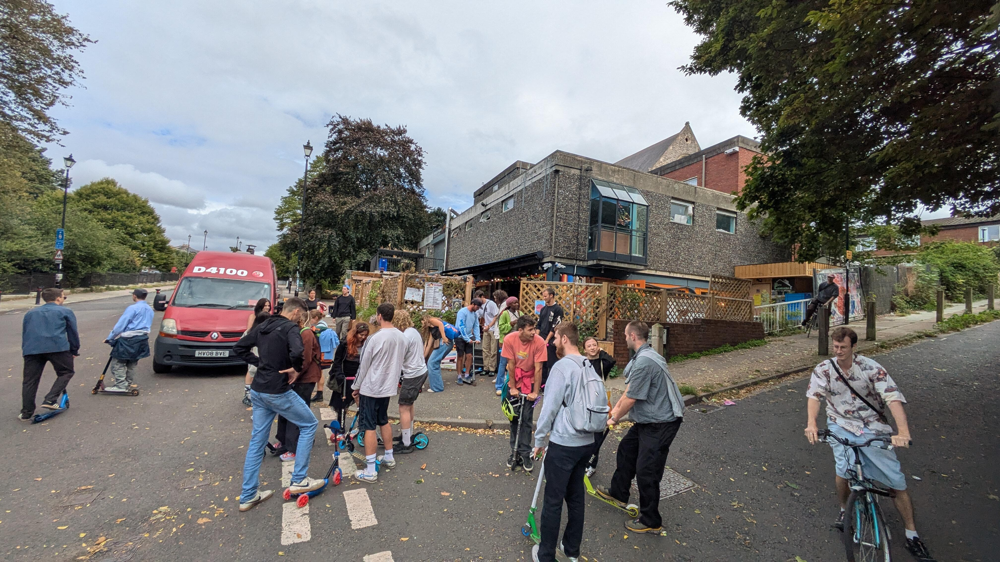
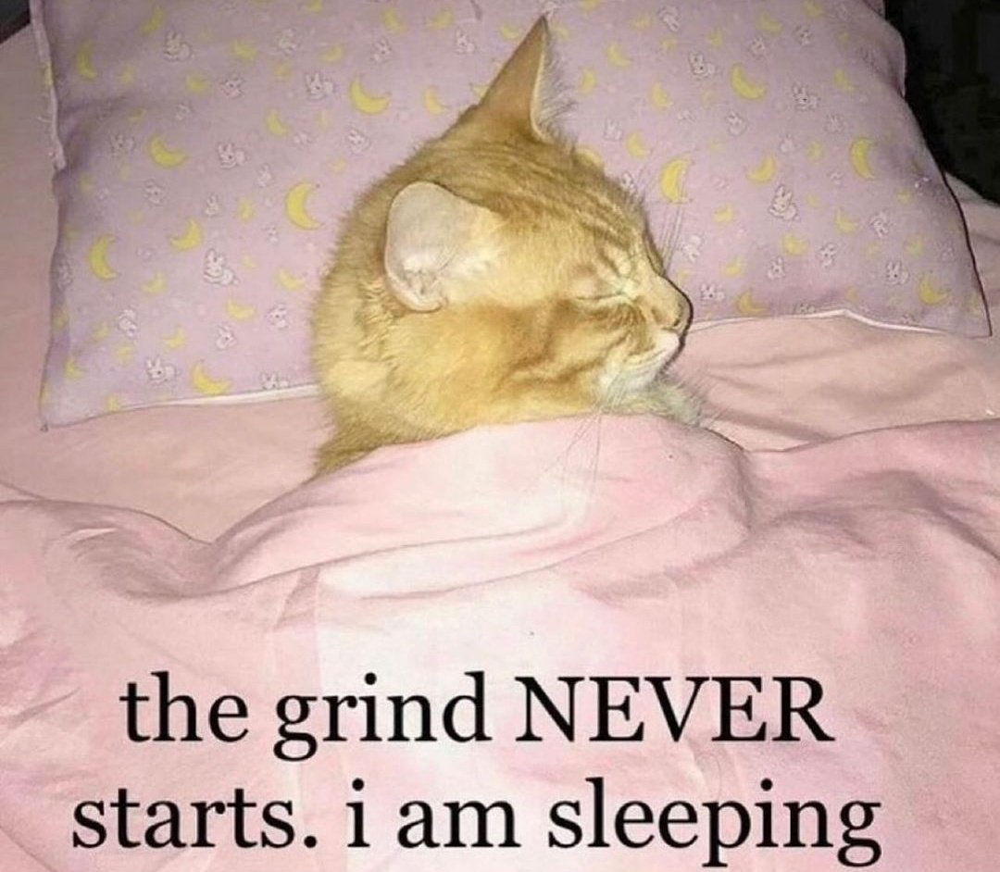
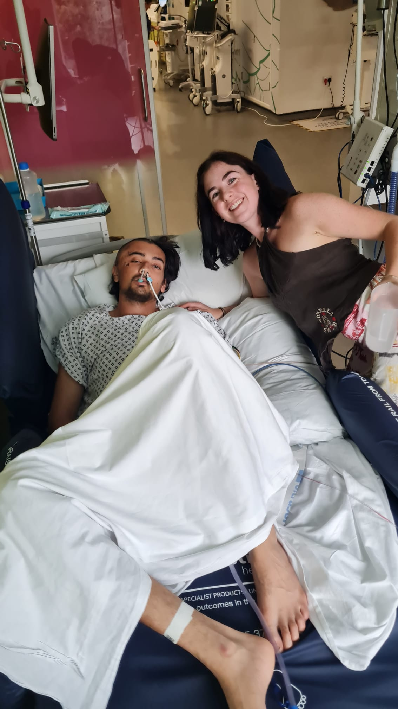
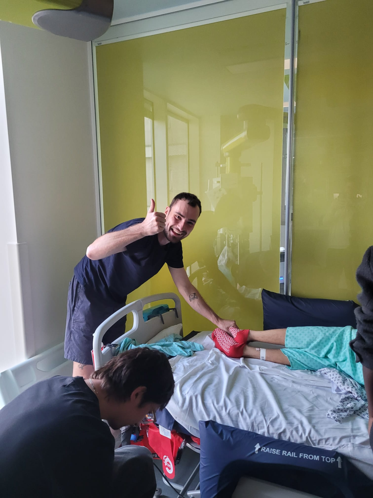
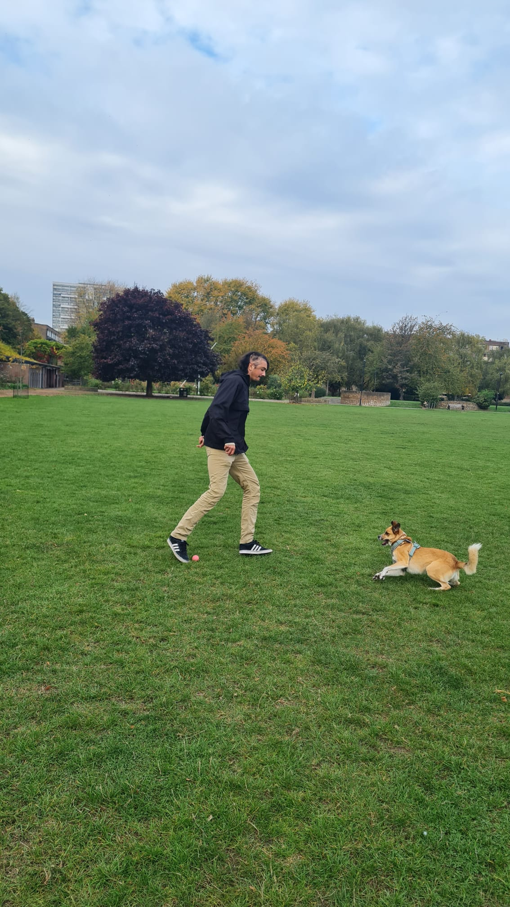
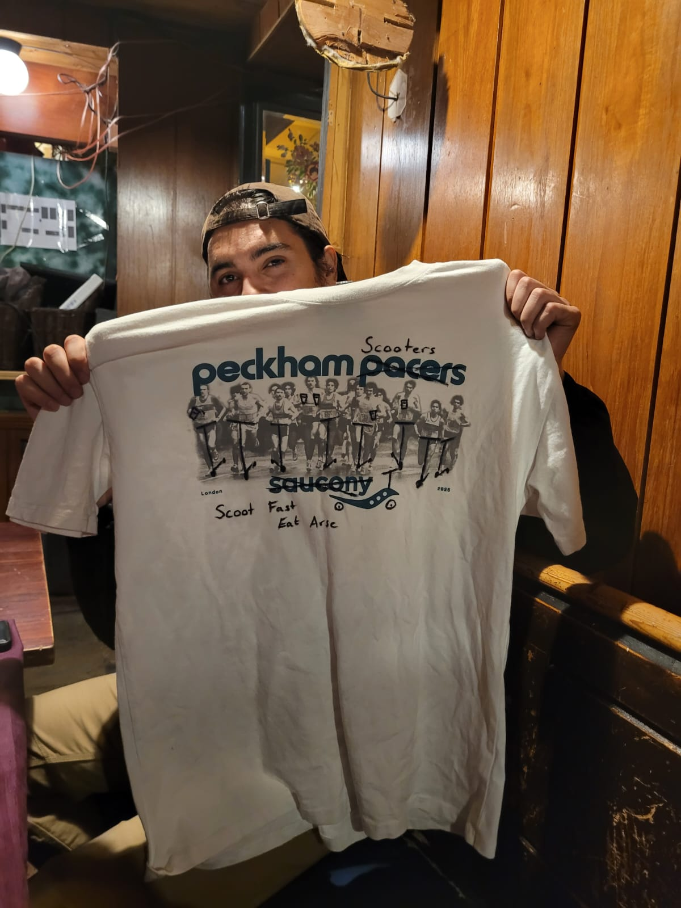

30/08/2025 | Olly Mathews:
"...So... Those will start when we leave the first pub,
the other awards we have as we go along our way.
We'll leave here in 15 minutes, we will go into the park
just over there and there is a skatepark just below.
We're gonna have a 10 minute timer and a free open-freestyle session
for anybody to win, the biggest stunt award... ("oh dear")
After that we move over to the hill bomb..."
And so we hit the road...

Things initially went well, the skateboard I had bought that day seemed to be holding up...
Eventually, we made it to the hill bomb... and I watched
as DJ Cosgroove wax the hill for us <3
This was the last thing I remember from that day.
But enough pussyfooting, it was time for a stunt.
I mean come on, there were prizes to be won!
And so, we sent it...
Whoever threw that bananna peel still deserves a slap >:(
At this point, I have to say thank you to everyone who was there and took the initiative,
called the ambulance and did all the right things, honestly I might not be here without you.
Apparently the last words I spoke were:
"My head really hurts"
before blacking out completely...
Part 2: Recovering...
Ok so here's where shit gets rough, don't say I didn't warn you!
so they drive me to the hospital, I have a seizure on the way,
I'm really just pissed I didn't get the ride in the helicopter, but hey you can't win them all...
My mum B-lines it back from Holiday in Slovakia and makes it to the hospital the next day,
Mum: What's happened?
Docs: Well your son has suffered traumatic brain injury.
He's fractured his mastoid, has several undisplaced skull fractures.
and has an intracranial subdural hemorrhage,
basically we need to operate in emergency ASAP, do we have your permission?
Mum: Do what you gotta do.
They perform the operation on the first of the September, it goes successfully,
but apparently they dropped part of my skull and had to leave it suspended in
some anti-bac stuff for 20 minutes (well done chaps).
After gluing me back together, I'm still completely knocked out, 4-5 days have gone by
now (I'm not sure the exact number) but yeah...

Eventually though, there are signs of life... kinda...

This is the face of a man who has:
- been sleeping for 4 days
- is being fed through his nose
- is pissing through a tube in his knob
- is on Ketamine
- is on Codine
- is on Fentanyl
- is receiving loving support from his friends and mum <3
I have to though, jesus fuck I was completely fucked up during
those early days when I woke up.
here are some highlights:
Falling on the crapper:
Was super dizzy in the early stage, Tom Ainscow accompanies me to
the toilet waits outside, 10 seconds later he just hears from the bathroom,
UUUUUUUGHHHHHHHHHH!!
he opens the door and I am a crumpled heap with my pants down on the floor.
He's still in there:
There was this physio working at the hospital,
according to my mate I absolutely hated him, he used to have me squeeze his
hand and I would be like "how is this supposed to help me?"
Anyway he asks my mum if she can bring in a tennis ball the next day
as they want to run some tests, she says sure.
Next day rolls round, my mum comes in with the tennis ball and throws it from
across the room, I lift my hand and immediately catch it perfectly.
The physio is like "well done Norman!"
I then proceed to throw the tennis ball as hard as a possibly can at my mum,
the Physio says: "Norman no!, you can't do that I'm a doctor and you shoudn't do that!"
to which I replied immediately:
"fuck you I'm a doctor too so you can't tell me what to do"
Apparently when my mum heard this she knew I was still somewhere in there :)
Poor Nick:
Alastair and my mate Nick came to visit,
I call Nick's name, he looks over to me and is like yeah what?
I tell him to come closer... he does, no... Closer! he's now got his
ear to my mouth. then I go: "Nick, you're a dweeb" and immediately
go back to sleep. sorry Nick!
Stretching the truth:
The doctors have a set of questions they
ask patients on the ward to check how their doing.
- What's your name?
- What year is it?
- What month is it?
- Do you know where you are?
- What is your job?
I answered most of these fine most of the time, but on a few occasions
I decided to fuck with them, especially on the last question.
doc: "Norman What is your Job?"
me : "I lift weights."
doc: "okay..."
doc : "Norman What is your job?"
me : "I'm a professional skateboarder"
doc : "Well you're not very good are you"
OCD and weird dreams
Because of all the drugs they had me on, I was basically trippin balls for days.
At one point hallucinated that I was in a hospital attached to a Ice-Hockey ring
in Slovakia.
I woke up and saw my friend Alessio, and I was like wow Alessio!
how did you make it to Slovakia!
he looks at me and is like... Slovakia? Norman you know there's a Wetherspoons up
the road?
me: I'm like really a Wetherspoons in Slovakia?
alessio: Yeah weird huh?
me: so we're not in Slovakia then?
alessio: probably not...
this kick-stated a complete compulsion to get to Wetherspoons by any means necessary,
I asked everyone who came to visit if they could take me to spoons, I asked the doctors
if they could take me to spoons, I even asked the crippled man in the bed next to me
if he could take me to spoons, Eventually, we did make it there but it took 5 weeks.
Also my feet were cramping so I was also asking everyone for foot massages :)

Anyway we continued the recovery process, I told the physio to suck it
and took matters into my own hands, turns out skilling up dogs is a good one!

Anyway after all that, turns out we won the biggest stunt prize!
Worth it for sure :)

See you next year for Norman Khan hosts the helmet pub crawl with optional scooters!!